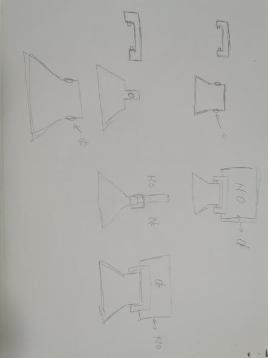

前回の課題リンク
製品プロトタイプ
NO・OKスマホグリップ
スマホスタンド
使用動画
設計
構想まず、キーホルダーを作ろうと考えた。
しかし、邪魔になると思い変更
次に、「色んな失敗 其の1」（下）のように設計したが失敗
結果、様々な用途に使え、邪魔にならないこの形になった。
構想段階スケッチ
最終的なスケッチ

イラスト
fusion360

説明
飲みの場で、お酒を飲みたいか飲みたくないかの意思表示ができるスマートフォンケース下の絵は自分で書きました。
真ん中についている物体でお酒がOKかNOかを表示できる仕様になっている
お酒の場以外では、スマホグリップ、または、スマホスタンドの役割に使うこともできる
使用機材
・3Dプリンター・レーザーカッター
・UVプリンター
同じ班のメンバーのDesign for Others-2
26日中に記載いろんな失敗
3Dプリンター編
其の1穴が開かない
→ プリントする際に穴の中に支えが入ってしまって、穴が開けられなかった
其の2
はまらない
→ 素材が固いため、かみ合わせのサイズが大きすぎて入れ込めなかった
其の3
稼働しない
→ 土台が邪魔で、動いてほしい部分が動かない
UVプリンター編
其の1印刷の順番
→ 白を先にした結果、見えて欲しい黒線が消えた。
また、白だけ浮いて見える